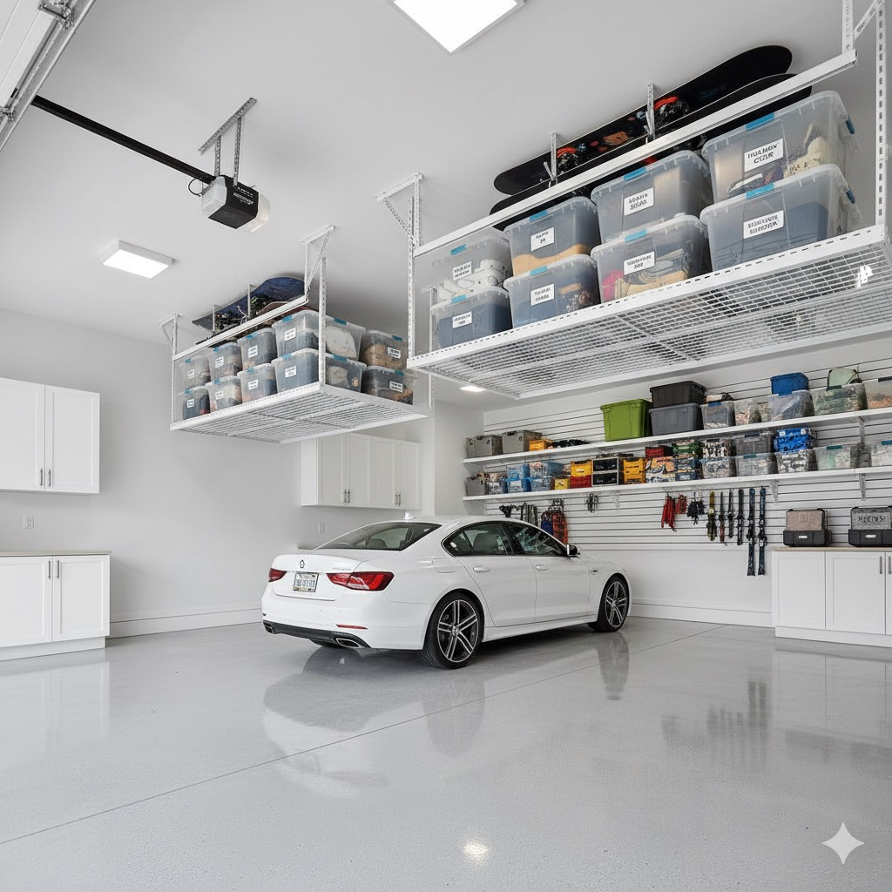

Heritage Pointe and Artesia homes are built around the golf course and Heritage Lake, and the garages inside them usually arrive from the builder as an afterthought — taped drywall, bare concrete, and a triple or quad bay with nothing in it but a hose reel. We bring the garage up to the standard of the house: custom cabinetry, a coated floor, a marked bay for the golf cart, and proper storage for kayaks and dock gear headed to the lake. One crew, one plan, the whole garage.
A personal golf cart needs a marked bay with room to swing the doors and a charger outlet nearby — not a corner behind whatever got pushed there last. We plan the cart bay before anything else goes in, so Saturday morning at the club doesn't start with moving three totes.
Kayaks, paddleboards, and dock lines need to dry before they're stored, and they take up floor space if they're not off the ground. We hang gear on overhead hoists or wall racks and keep PFDs and lines in sealed cabinets, out of the way between trips to the water.
Artesia and Heritage Pointe homes are handed over with the garage unfinished while the house is done to a high standard. We close that gap: furniture-grade cabinetry, proper lighting, slatwall, and a floor coating that make the garage look like it belongs to the rest of the house.
Bigger garages create their own problem: the third or fourth bay becomes the household's overflow room. We zone every bay for a purpose — vehicles, cart, gear wall, seasonal storage — so a garage built to park four cars doesn't end up parking one.
We look at every bay, the ceiling height, and anything on wheels that needs a home — vehicles, golf cart, kayaks, seasonal bins — before deciding what goes where. Triple and quad garages get measured bay by bay, not treated as one big room.
One bay parks the daily vehicles, one holds the golf cart with clear swing room, one carries the gear wall and overhead storage. Assigning a job to each bay is what stops a four-car garage from slowly filling with everything that has no other home.
New-build garages accumulate packaging, extra flooring and tile from the build, and duplicate tools fast. We sort keep, donate, sell, and dispose before any cabinetry goes in, so you're not paying to store things you don't want.
Full-height custom cabinetry, a slatwall or pegboard tool zone, and overhead platforms go in against the walls first. If the project includes an epoxy or polyaspartic floor, it's coated while the garage is empty, then everything moves back in on top of it.
We label zones, walk you through where everything lives, and leave the golf cart charged and parked in its own bay. The finish line is a garage that looks like the rest of the house and works like it was designed for your family, not the builder's default.


Same footprint, a working planNothing about a Heritage Pointe garage needs more square footage to fix — it needs zoning, overhead storage, and a floor that isn't bare concrete. That's the whole project, start to finish.
From lakefront estates on Heritage Lake Drive to the newer phases of Artesia
Artesia and Heritage Pointe homes come from the builder with quartz counters and engineered hardwood inside, and taped drywall over bare concrete in the garage. That gap is normal — production builders spend the finish allowance where buyers see it first — but it means almost every garage in the community needs the same upgrade: cabinetry, lighting, and a floor coating brought up to the rest of the house.
Triple and quad garages solve one problem and create another: more floor invites more stuff. Without a plan, the extra bay becomes the household's junk room by year two — bikes, holiday decor, flats of water, half-used paint. We give every bay an assigned job so the extra space stays usable instead of becoming storage by default.
Heritage Pointe's golf course and the community's cart-friendly paths mean plenty of households keep a personal cart, and it's usually parked wherever there's a gap rather than in a planned bay. A dedicated cart bay with a charger nearby and clear door swing keeps it ready to go without a Saturday-morning shuffle of totes and bikes.
Kayaks, paddleboards, and dock gear are a real category of storage most garage systems don't plan for. Wet gear left on the floor damages epoxy and drywall alike over a season. Overhead hoists, wall racks, and a drying zone near the door solve it, and they keep lake gear out of the way of the vehicles and the cart.
Heritage Pointe sits south of Calgary on the open Foothills County plain, exposed to the same chinook swings that hit Okotoks and the rest of the region — slush and road salt tracked in one week, hard freeze the next. An epoxy or polyaspartic floor handles that cycling far better than bare concrete, and it's the finish estate garages in the community are increasingly expected to have.
We use furniture-grade cabinet lines and finishes chosen to sit alongside a modern estate interior, not garage-store melamine boxes. The result reads as part of the house's design, which matters every day you're in it and again if the home ever goes to market.

A dedicated tool wall, not a pile on the benchSlatwall or pegboard next to a real workbench means hand tools are visible and grabbable, and the bench itself stays clear for actual projects instead of becoming a shelf.
The full menu of cabinets, slatwall, and overhead systems we build every Heritage Pointe project around.
Flooring, lighting, and full layout renovations for garages that need more than storage alone.
Our neighbouring lake-community page, covering Mahogany, Auburn Bay, and Lake Bonavista garages.
Our flagship city page — how we transform garages across Calgary, from declutters to full custom systems.
Heritage Pointe and Artesia are a regular stop for us — the drive from our Calgary crews is under 20 minutes down Deerfoot or Macleod Trail to Highway 2A, past Cranston and Legacy. We quote and schedule Heritage Pointe jobs the same way we do inside city limits, with no acreage surcharge for a standard attached garage.
Most Heritage Pointe and Artesia homes are handed over with a taped-and-primed drywall garage and painted concrete at best — the builder spent the finish budget on the house. We bring it up to the home's standard: full-height custom cabinetry, slatwall or pegboard for tools, overhead platforms for seasonal storage, and a coated epoxy or polyaspartic floor. Most projects run one to three days depending on cabinetry scope.
Yes. A fair number of Heritage Pointe households keep a personal golf cart for the course and for getting around the community, and it needs its own marked bay — charger outlet nearby, clear swing room for the doors, and nothing stacked in front of it on a Saturday morning. We plan that bay first, then build storage around it rather than squeezing the cart into whatever's left.
We build overhead hoists or wall racks sized for kayaks and paddleboards, plus lower cabinets for PFDs, dock lines, and lake toys that need to dry before they're put away. Keeping wet gear off the epoxy floor and out of sealed cabinets is part of the plan, not an afterthought.
That is the point of doing it properly rather than buying shelving off the shelf. We use furniture-grade cabinet lines in finishes that match a modern estate interior, not garage-store melamine, and we account for community design guidelines many Heritage Pointe streets follow so the garage reads as an extension of the house, not an afterthought bolted onto it.
Every home is quoted individually. A decluttering and organization pass on an existing garage starts around $199; a full cabinetry, slatwall, overhead storage, and epoxy floor build-out for a triple or quad garage is a larger project scoped to square footage and finish level. We start with a free consultation and a written quote, and photos are enough for a first estimate.
Get your free consultation today. Cabinetry, floor, golf cart bay, and lake-gear storage — one plan, built for how Heritage Pointe actually lives.
Call or text — photos of your garage are all we need for a first estimate!
Heritage Pointe, Artesia & De Winton
Plus South Calgary, Okotoks & Foothills CountyThe fastest way: call or text a photo of your garage and we'll have a quote back to you the same day.
Call (587) 804-9266 Text Us a PhotoMon–Fri 8am–6pm · Sat 9am–4pm · texts answered evenings too